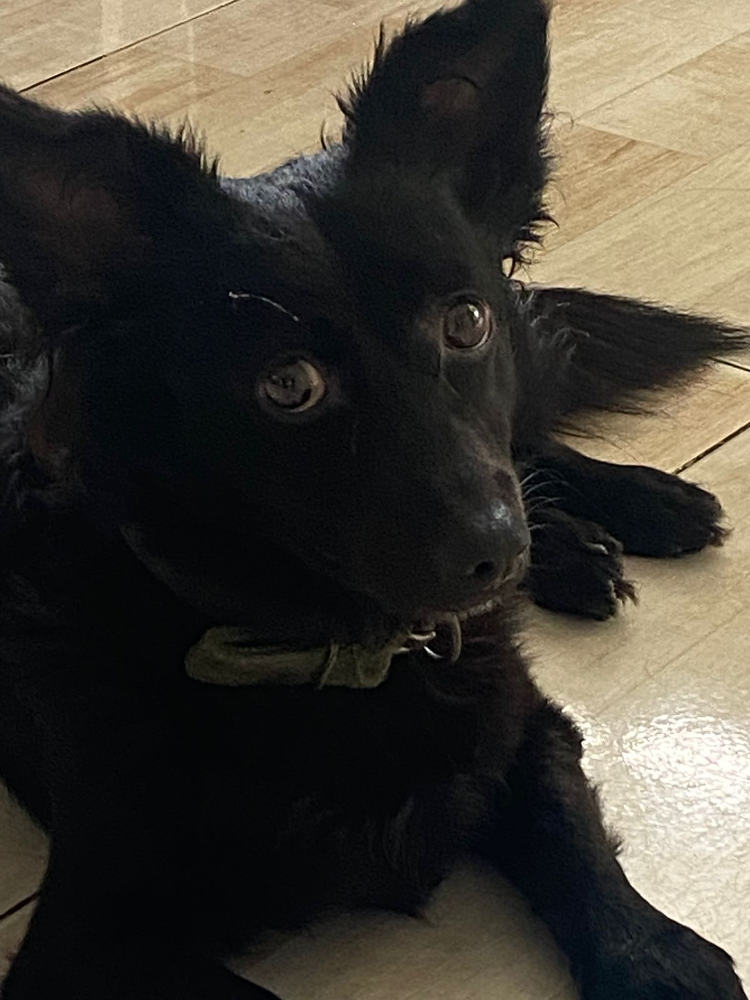

Ryu De oro
Es un perro, tiene 3 años, nacio el 18 de noviembre de 2022. suele ser muy jugueton, cariñoso, mimoso y travieso. Le encanta salir de paseo, incluso correr entre los pequeños arroyos que se forman durante la lluvia. No le agrada mucho la idea de bañarse, cuando tiene la oportunidad se escapa y me obliga a perseguirlo. No sabe socializar con los demas perros, lo intenta pero siempre pasa algo. sinceramente lo secuestramos de una camada de la cual me hice cargo de encontrarles hogar ya que su mamà era una perrita que vivia en la calle. Lo nombre Ryu por su pelaje negro y su cola frondosa, lo que lo hacia ver como un murcielago o un dragon de ahi su nombre, en ese tiempo estaba muy obseionada con el japones y Ryu en japones significa: Dragòn.